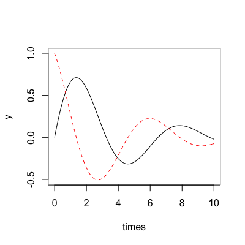
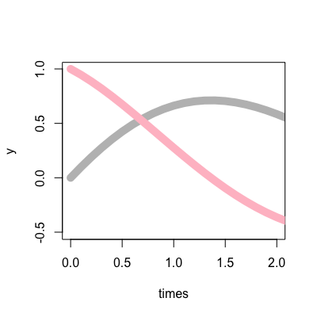
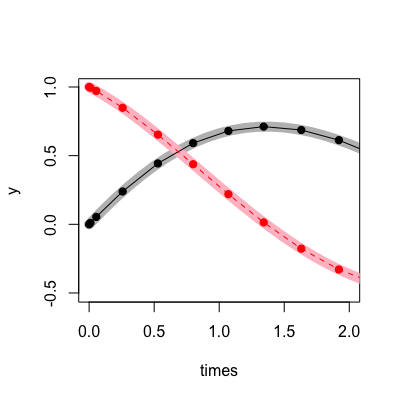

integrate_const(stepper, ode_system, y, t0, t1, dt, save_state = FALSE)integrate_n_steps(stepper, ode_system, y, t0, dt, n, save_state = FALSE)integrate_adaptive(stepper, ode_system, y, t0, t1, dt, save_state = FALSE)integrate_times(stepper, ode_system, y, times, dt)
stepper object, created by
make_stepperode_systemintegrate_n_steps only)integrate_times only)integrate_times, which always returns information about
intermediate points.Integrate a system of ordinary differential equations (ODEs).
This is the low-level interface that corresponds exactly to the
ideint interface. An easier to use, more R-ish, interface
is available using make_integrate.
There are four different integration functions here. See the odeint documentation for more detail about the precice differences. The summary, though, is:
integrate_const "Equidistant observer calls"
integrate_n_steps "Integrate a given number of steps"
integrate_adaptive "Observer calls at each step"
integrate_times "Observer calls at given time points"
This page provides much more detail. The functions here are direct wrappers of the odeint functions, so the interpretation is identical.
If you just want the end-points, integrate_adaptive is
probably the function to use. If you want to know intermediate
values at particular times too, use integrate_times. The
functions integrate_const and integrate_n_steps are
provided more for completeness than for utility, but they may be
useful in specific applications.
## Picking up with the harmonic oscillator from the ode_system ## example: derivs <- function(y, t, pars) { c(y[2], -y[1] - pars * y[2]) } ## Parameters of the system: pars <- 0.5 ## Build the system itself sys <- ode_system(derivs, pars) ## We also need a stepper (see the ?stepper help page) s <- make_stepper("dense", "runge_kutta_dopri5") ## Suppose we want output at these times: times <- seq(0, 10, length=101) ## Starting from this initial state: y0 <- c(0, 1) ## Initial step size guess: dt <- 0.01 ## This intergrates the system (all integrate_ functions take stepper, ## system, y as the first theree arguments). y <- integrate_times(s, sys, y0, times, dt) ## Here are the variables changing over time: matplot(times, y, type="l")
## The result also has useful attributes. The "t" attribute is the ## times (this is the same as 'times' here) attr(y, "t")[1] 0.0 0.1 0.2 0.3 0.4 0.5 0.6 0.7 0.8 0.9 1.0 1.1 1.2 1.3 1.4 [16] 1.5 1.6 1.7 1.8 1.9 2.0 2.1 2.2 2.3 2.4 2.5 2.6 2.7 2.8 2.9 [31] 3.0 3.1 3.2 3.3 3.4 3.5 3.6 3.7 3.8 3.9 4.0 4.1 4.2 4.3 4.4 [46] 4.5 4.6 4.7 4.8 4.9 5.0 5.1 5.2 5.3 5.4 5.5 5.6 5.7 5.8 5.9 [61] 6.0 6.1 6.2 6.3 6.4 6.5 6.6 6.7 6.8 6.9 7.0 7.1 7.2 7.3 7.4 [76] 7.5 7.6 7.7 7.8 7.9 8.0 8.1 8.2 8.3 8.4 8.5 8.6 8.7 8.8 8.9 [91] 9.0 9.1 9.2 9.3 9.4 9.5 9.6 9.7 9.8 9.9 10.0## The "steps" attributes contains the number of steps the system took attr(y, "steps")[1] 34## Here, the number is lower than the number of times! This is ## because we used a "dense output stepper" which can interpolate back ## over times that have passed. See the "See also" section for a link ## to the odeint help about this. ## The "y" attribute contains the final system state - here it will be ## the same as the last row of 'y' itself attr(y, "y")[1] -0.02160347 -0.07397367y[nrow(y),][1] -0.02160347 -0.07397367## If you don't care about intermediate times, the ## "integrate_adaptive" function is probably the right one to use. y_a <- integrate_adaptive(s, sys, y0, min(times), max(times), dt) y_a[1] -0.02160347 -0.07397367## Here we jump all the way to the final time as quickly as possible. y_a[1] -0.02160347 -0.07397367attr(y, "y")[1] -0.02160347 -0.07397367## It's possible to remember the steps taken by usin the "save_state" ## argument. y_a <- integrate_adaptive(s, sys, y0, min(times), max(times), dt, save_state=TRUE) ## Now y_a contains three attributes, the same as returned by ## integrate_times. "t" is the vector of times that the stepper ## stopped at: attr(y_a, "t")[1] 0.0000000 0.0100000 0.0550000 0.2575000 0.5286291 0.7997582 [7] 1.0708873 1.3420164 1.6309726 1.9199289 2.2088851 2.4978413 [13] 2.7867975 3.0757537 3.3769160 3.6780782 3.9792404 4.2804026 [19] 4.5815649 4.9062149 5.2308649 5.5555149 5.8801650 6.2048150 [25] 6.5294650 6.8677236 7.2059821 7.5442406 7.8969110 8.2710404 [31] 8.6451698 9.0192992 9.3934286 9.7675581 10.0000000## "y" contains the y values at these points, wherever they are: attr(y_a, "y")[,1] [,2] [1,] 0.000000000 1.000000000 [2,] 0.009974875 0.994962646 [3,] 0.054223288 0.971390003 [4,] 0.238952009 0.848922710 [5,] 0.443225135 0.653105633 [6,] 0.591317282 0.437489651 [7,] 0.680232383 0.219316983 [8,] 0.711397537 0.013818617 [9,] 0.686939264 -0.177312376 [10,] 0.612736126 -0.329041820 [11,] 0.501208969 -0.434955990 [12,] 0.365989311 -0.493041141 [13,] 0.220704048 -0.505247071 [14,] 0.077924018 -0.476803382 [15,] -0.056715101 -0.412187698 [16,] -0.167793270 -0.322159984 [17,] -0.249321789 -0.217795884 [18,] -0.298618473 -0.109820786 [19,] -0.316069565 -0.007762507 [20,] -0.302701104 0.086826934 [21,] -0.262144225 0.158870217 [22,] -0.202383887 0.204797941 [23,] -0.132060540 0.224094028 [24,] -0.059538647 0.218887991 [25,] 0.007858600 0.193353173 [26,] 0.066468459 0.151073056 [27,] 0.109028144 0.099619884 [28,] 0.133597519 0.045785838 [29,] 0.140335725 -0.006429422 [30,] 0.129061730 -0.051716116 [31,] 0.103426366 -0.082750940 [32,] 0.069114475 -0.098049484 [33,] 0.031935795 -0.098366179 [34,] -0.002929415 -0.086217132 [35,] -0.021603470 -0.073973666## Here is the dense output (thick lines) with the actual observed ## spots overlaid. You can see the step size change at the beginning ## of the problem until the stepper works out how fast it can go while ## achieving the required accuracy. matplot(times, y, type="l", col=c("grey", "pink"), lty=1, lwd=10, xlim=c(0, 2))
matlines(attr(y_a, "t"), attr(y_a, "y"), type="o", pch=19)
## Manually specifying the stepper and step size and passing around 6 ## or so parameters all the time gets old, so there is a function ## "make_integrate" to help collect everything together. See ## ?make_integrate for more information.
make_stepper for building steppers and for
information about possible algorithms, ode_system for
building a sytem of ODEs, and make_integrate for a
higher-level interface to these functions.
The odeint documentation also has useful reference information on
differences
between the four integrate functions, and how
dense
output steppers work.